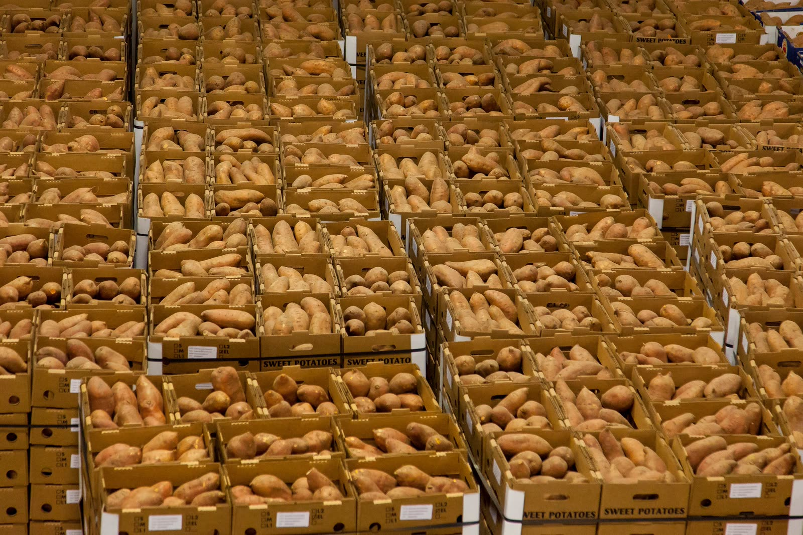
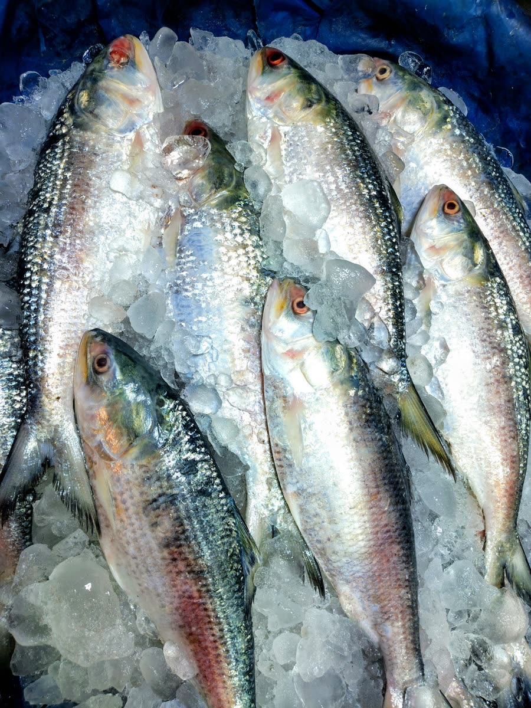

Every lot verified. Every import risk controlled.
We act for the buyer. Every lot passes five QC gates and a document check before shipment, and you receive the evidence for each import risk.
Testing & documents
Tested by lot, traceable to the pond.
Every shipment travels with a Department of Fisheries health certificate, a certificate of origin and the lab report for the exact lot you receive.
Where did this carton come from?
The lot code is printed on the side of every master carton.
Strict QC
Five gates. A lot that fails any gate does not ship.
Our QC officers or an independent inspector check each gate against your purchase specification, not just the exporter's own standard.
- Gate 1
Raw material
Farm, orchard or landing records; residue screening (antibiotics for aquaculture, pesticides for crops); temperature and condition on arrival.
- Gate 2
Processing
Grade, size, cut, moisture and freshness checked in process against your specification. Sorting and treatment of fresh produce.
- Gate 3
Lab release
Residues, heavy metals, aflatoxin and microbiology tested at an accredited lab for the exact lot.
- Gate 4
Pre-shipment inspection
AQL sampling of cartons: net weight, grade, count or glaze, packing and labels, with photos and video sent to you.
- Gate 5
Loading
Reefer pre-cooled and set point verified. Loading supervised, core temperatures logged, seal number recorded.


Digital lot file
One link holds the full record of your shipment.
Each lot gets a shared digital file: supplier verification, lab certificate, inspection report, loading photos, temperature log and shipping documents. It is the record your auditors, retailers and traceability rules ask for.
You receive the inspection report, lab certificate and loading photos before the balance payment or document release.
Import risk control
17 risks a food importer faces, and how we control each one.
Before you pay the balance or the documents are released, you hold evidence for every line in this table.
| Risk | What can go wrong | How GFG controls it | Evidence you receive |
|---|---|---|---|
| Border rejection for residues | Antibiotic or chemical residues found at the importing border; the container is destroyed or returned. | Plant residue history reviewed; every lot tested for nitrofurans, chloramphenicol, malachite green and heavy metals at an accredited lab. | Lab certificate for the exact lot, before shipment |
| Plant not approved for your market | The plant is missing from the EU, SFDA, GACC or FDA list, so the consignment is refused. | Current listing checked at contract and again before loading. | Screenshot or extract of the official list |
| Quality below specification | Wrong count or grade, soft texture or black spot, so your customers complain or reject. | Gates 2 and 4: in-process checks and AQL pre-shipment inspection against your specification. | Inspection report with photos and video; your approval before loading |
| Short weight or excess glaze | You pay for ice instead of product. | Glaze % fixed in the contract; deglazed net weight checked on sample cartons. | Weight and glaze table in the inspection report |
| Species substitution or mislabelling | A cheaper species or wrong label, which breaks labelling law. | Species checked at receiving and packing; DNA testing on request. | Species declaration; DNA result on request |
| Temperature abuse | Thawing and refreezing in transit cause quality loss and food-safety risk. | Core temperatures logged; reefer pre-cooled and set point verified at loading; supervised loading. | Loading temperature log and the carrier's reefer data |
| Wrong or missing documents | Customs holds, demurrage, or loss of preferential duty. | Document checklist per market; you approve drafts before originals are issued. | Draft set: invoice, packing list, health certificate, origin statement, B/L |
| Illegal or unreported catch (IUU) | Wild-caught fish refused under the EU IUU regulation. | Catch certificate validated by the Department of Fisheries for wild-caught marine fish. | Validated catch certificate |
| Payment or fraud risk | Advance paid to the wrong party, or goods not shipped. | Exporter identity and bank account verified; L/C at sight or payment against documents. | Verified exporter details in the proforma invoice |
| Supplier default or delay | The plant cannot deliver on time, so your shelves run empty. | A second qualified plant held for each product; production slot confirmed in writing. | Production schedule and weekly status updates |
| Price volatility | Raw material prices move between offer and contract. | Price validity stated in every offer; seasonal booking advice; supply programmes at agreed prices. | Written offer with validity date |
| Export restrictions | Products such as hilsa or aromatic rice can face permits, quotas or bans. | Current export policy checked before we offer. | Policy confirmation in the offer |
| Pesticide residues above limits | Fresh produce exceeds the importing market's maximum residue limits (MRLs) and is destroyed or recalled. | Farm spray records checked; pre-harvest interval enforced; multi-residue lab test per lot for fresh produce and spices. | Pesticide residue report against your market's MRLs |
| Plant pests and phytosanitary failure | Fruit fly or other quarantine pests found at the border; the whole consignment is refused. | Sourcing from monitored orchards and farms; sorting, cleaning and treatment (hot water for mango); phytosanitary inspection by the DAE Plant Protection Wing. | Phytosanitary certificate and treatment record |
| Aflatoxin and contaminants | Aflatoxin, Sudan dyes or heavy metals in spices, rice or dried products. | Lab tests for aflatoxin, illegal dyes and heavy metals; moisture control in storage. | Lab certificate for the exact lot |
| Allergen and labelling errors | Packaged food recalled for undeclared allergens or non-compliant labels. | Labels checked against your market's rules (ingredients, allergens, nutrition, language) before printing. | Approved label proof before production |
| Claims after arrival | A quality issue found at destination. | Claim procedure written into the contract; we respond within 48 hours and pursue the exporter on your behalf. | Written claim outcome: credit note or replacement |
Risk can be reduced, not removed entirely. These controls are written into each purchase contract so responsibility is clear if something goes wrong.
Cold chain · pond to port
Six temperatures between the pond and your port.
Product is iced within an hour of harvest and kept below 4 °C until freezing. Each stage is logged against the lot code on the master carton.
- 0–4°Step 1
Harvest & icing
Flake ice 1:1 at the farm gate or landing point.
- ≤4°Step 2
Depot & grading
Insulated trucks to the plant. Washed and size-graded.
- ≤4°Step 3
Processing
Heading, peeling and deveining in a chilled hall.
- −35°Step 4
IQF / plate freeze
Frozen until the core reaches −18 °C. Glaze as specified.
- −22°Step 5
Cold storage
Master cartons on pallets. Pre-shipment inspection.
- −20°Step 6
Reefer to port
Loaded at the plant, sealed and tracked to destination.
At source
Receiving and grading.
Raw material is iced, graded and moved into the chilled processing hall the same morning.